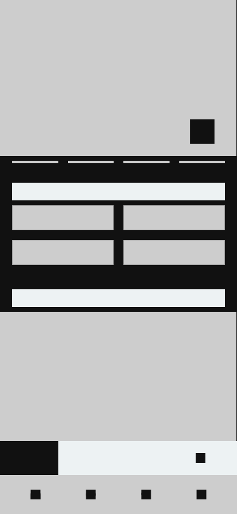
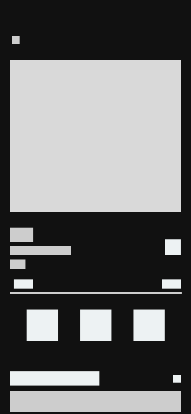
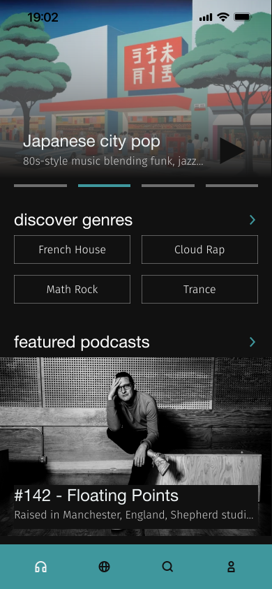
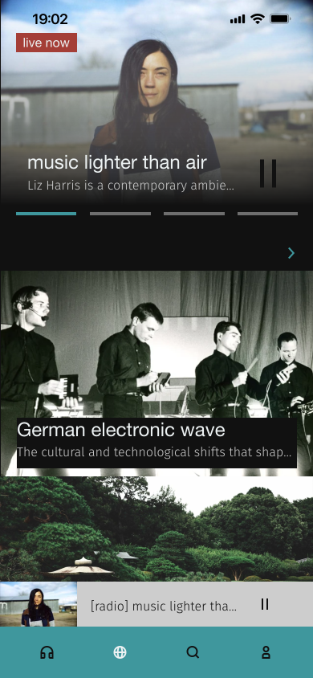
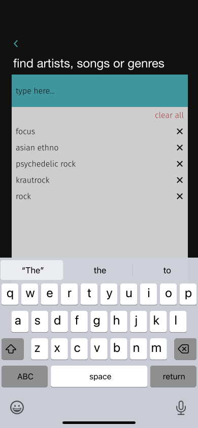
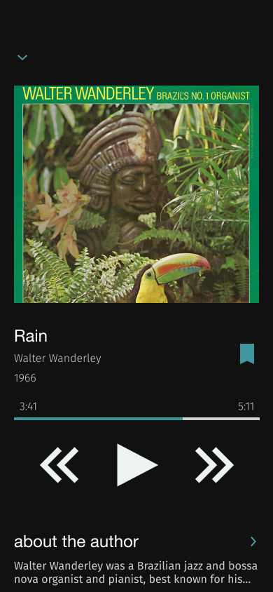

sara
discover new tunes
Sara is a music platform inspired by Saraswati, the Hindu goddess of music. Offering access to both popular and niche music or podcasts, it enables users to uncover new artists and unique sounds from around the world. With smart recommendations and internet radio, Sara is perfect for those eager to broaden their musical horizons and dive into fresh and unconventional tracks. The app primarily focuses on discovering new content, but it also allows users to listen to music directly.
There are streaming app users who would often like to broaden their musical horizons. Well-known mainstream apps like Spotify and Apple Music are built around the idea that users already know what they want to listen to, offering tools to collect and organize their favorite albums or tracks. There is a lack of a dedicated space for music exploration that goes beyond algorithm-driven recommendations.
Sara is a mobile app offering a vast selection of shows, tracks, and albums – all carefully curated by real people. DJs, critics and other hosts help shape the Sara community, allowing users to break out of musical routines and discover something unexpected.
Let’s take a closer look at Sara’s potential users.
Emily, 33
Marketing Specialist
"I am always curious about what's happening in the music scene beyond the mainstream."
Jared, 28
independent DJ
"I want to surprise my audience with something they’ve never heard before and stay up to date with the freshest underground sounds."
Sara focuses on discovering new sounds, so my task is to make it easier for the user to navigate the app. This time, I opted for a flat design style to ensure optimisation and readability of the mobile interface.


The app features three main subpages – Discover, Radio, and Search.
Default section (Discover) introduces users to fresh sounds and hidden gems, with options to explore curated playlists, artist spotlights, and genre recommendations. Users can also dive into podcasts, select moods, or discover genres to personalize their listening experience.
Radio offers an engaging platform for listeners to tune into a variety of internet radio stations that cater to diverse musical tastes.
By using search bar, users can explore sounds, artist or specific genres and enjoy their music journey.
The app's prototype has been created, so we can move on to the GUI design. As mentioned earlier, the visual outline is based on flat design which has become very popular in recent years. It will consist of simple and intuitive elements, making the navigation easy to use.
In this case, I chose black (#1E1E1E) as the dominant background color, while the rest of the components are in white. Some elements on the subpages span the entire width of the screen, such as broadcasts or podcasts. Also, I chose teal (#3F979D) as the primary color. This color is associated with modernity and wisdom, making it a perfect fit for expanding musical horizons.
The logo uses the Montserrat Alternates font, while the body text is set in Helvetica Neue.




The Sara music streaming app effectively solves the challenge of broadening musical horizons by creating a platform where discovery is not only encouraged but is also easy and enjoyable, allowing users to engage with music in a deeper and more meaningful way. The architecture is designed to facilitate exploration and discovery, offering easy access to curated radio stations, genre-based music exploration, and personalised recommendations. The app itself helps users find shows or podcasts that match their interests.
Sara's layout, with its simple and streamlined navigation, supports a seamless user experience. By prioritising ease of use and clarity, users can effortlessly access curated radio selections and genre-based explorations, fostering an environment for musical discovery.